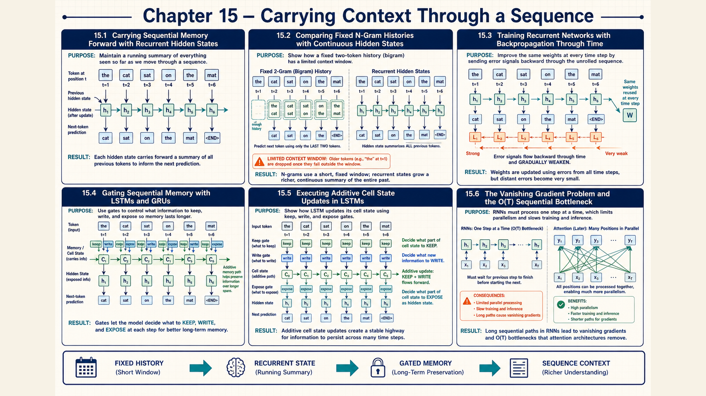
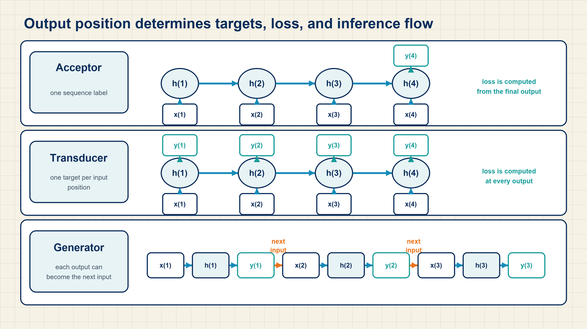

15 Recurrent Networks: Why Sequential Memory Hits a Wall
Language has order: an earlier token can change the meaning of a later one. Recurrent models represent that order by carrying a state from one position to the next.
Sequence tasks must retain both token content and token order. N-grams use a fixed history; RNNs and LSTMs carry a learned state through the sequence, which exposes the limits that motivate attention.
In code, torch.nn.RNN, GRU, and LSTM return per-token outputs and final states; NLTK supports the count-based n-gram comparison.
Chapter 15 develops one required stage of the guide’s computation.

The numbered panels correspond to the chapter sections and show how each local result supplies the next operation.
15.1 Carrying Sequential Memory Forward with Recurrent Hidden States
A sequence task preserves the order of tokens and may return one decision, one label per position, or another sequence.
- Sequence acceptor: A model that reads a sequence and produces one decision, such as a class label.
- Sequence transducer: A model that maps an input sequence to an output sequence.
- Autoregressive model: A model that predicts future tokens from previous tokens.
- Teacher forcing: Training a decoder with the true previous token rather than its own sampled previous token.
A sequence task preserves token order. An acceptor reads the sequence and returns one decision, sequence labeling returns one label per position, and generation or translation returns another sequence.
These output forms describe the task, not the network. The next sections compare fixed-history probabilities with recurrent state before introducing the mechanism that trains that state.
The hidden state gives a sequence model a learned memory, but its value depends on how much context the task actually needs.
15.2 Comparing Fixed N-Gram Histories with Continuous Hidden States
An n-gram language model predicts the next token from a fixed-length suffix of the preceding token sequence.
- Markov assumption: Only a fixed number of previous tokens are used to predict the next token.
- Smoothing: Assigning nonzero probability to unseen n-grams.
The Markov assumption is the key simplification: instead of conditioning on the full prefix, the model keeps only the last one, two, or three tokens. That makes counts tractable but loses long-range dependencies.
N-grams are useful because they show the probability problem before neural representations enter. They also make smoothing necessary, since many valid contexts are rare or absent in the training corpus.
The model keeps only a fixed-width history.
N-gram approximation:
\[ P(x_{t}\mid x_{<t})\approx P\!\left(x_{t}\mid x_{t-n+1},\ldots,x_{t-1}\right) \tag{15.1}\]
Example: N-gram approximation
A trigram model estimates P(‘sat’ | ‘the cat slept’) as P(‘sat’ | ‘cat slept’).
A fixed history is simple to count, while a learned state can compress earlier evidence. Training that state requires an unrolled recurrent computation.
15.3 Training Recurrent Networks with Backpropagation Through Time
A recurrent neural network updates a hidden state as it scans a sequence. The hidden state is a compressed memory of previous tokens.
- RNN cell: The repeated function that combines the current input and previous hidden state.
- Vanishing gradient: The tendency for gradients through many recurrent steps to shrink.
At step t, an RNN combines the current input vector with the previous hidden state using the same learned weights used at every other position. The new state can produce an output immediately or carry information to a later position.
Backpropagation through time unrolls those repeated updates. A loss at a later position sends gradients through each earlier state transition to the shared input and recurrent matrices.
Teacher forcing supplies the observed previous token during training. During generation the model receives its own selected token instead, so an early error can alter every later input state.
An RNN updates a hidden state one token at a time.
RNN update:
\[ h_{t}=\phi(W_{x}x_{t}+W_{h}h_{t-1}+b) \tag{15.2}\]
where \(x_{t}\) is input at time t; \(h_{t-1}\) is previous hidden state; \(h_{t}\) is new hidden state.
An RNN reuses the same transition at every time step, combining the new input with a summary of previous inputs.
recurrence serializes sequence processing because each \(h_{t}\) depends on \(h_{t-1}\).
A sequence model can emit logits from each hidden state.
RNN output:
\[ z_{t}=W_{o}h_{t}+b_{o} \tag{15.3}\]
where \(h_{t}\) is hidden state at time t; \(x_{t}\) is input vector at time t; φ is nonlinear activation.
The recurrence combines the current input with the previous hidden state before applying the activation.
The hidden state carries information forward, but the same dependency also limits parallel computation.
Example: RNN State for Sequential Prediction
RNN update:
In a scalar toy RNN with identity activation, input weight 2, recurrent weight 0.5, current input 3, and previous hidden state 4, the next hidden state is 8.
RNN output:
If \(h_t=[1,2]\), \(W_o\) is the \(2\times2\) identity, and \(b_o=[0,0]\), then the output logits are \([1,2]\).
RNN recurrence:
With both scalar weights equal to \(1\), \(x_t=2\), \(h_{t-1}=1\), and \(b=0\), the preactivation is \(1\cdot2+1\cdot1+0=3\).
Code example: Deep bidirectional LSTM dimensions
import torch
import torch.nn as nn
batch, steps, input_width, hidden_width = 2, 5, 3, 4
inputs = torch.randn(batch, steps, input_width)
lstm = nn.LSTM(
input_size=input_width,
hidden_size=hidden_width,
num_layers=2,
batch_first=True,
bidirectional=True,
)
outputs, (final_hidden, final_cell) = lstm(inputs)
print(outputs.shape) # [batch, steps, 2 * hidden_width]
print(final_hidden.shape) # [layers * directions, batch, hidden_width]
print(final_cell.shape)The output width doubles because each position receives one state from each direction.
Bidirectional recurrence assumes that the complete input sequence is available.
Backpropagation through time assigns the loss at later positions to the shared recurrent weights used at earlier positions.
15.4 Gating Sequential Memory with LSTMs and GRUs
An LSTM adds gates that control what to remember, forget, and expose. The gates improve gradient flow and make longer dependencies more learnable than in a plain RNN.
- Forget gate: Controls how much previous cell state is retained.
- Input gate: Controls how much new candidate information enters the cell state.
- Output gate: Controls how much cell state is exposed as hidden state.
- Cell state: The LSTM memory path designed to preserve information over time.
The mathematical purpose of gates is selective information flow. A gate near 0 blocks information; a gate near 1 passes it through.
LSTMs reduce but do not eliminate the sequential bottleneck. They still process tokens step by step, which limits parallelism compared with transformer self-attention.
Origin note: LSTMs introduced gated memory to reduce the vanishing-gradient problem in recurrent sequence learning.
The cell state \(c_{t}\) is the long-lived memory vector. The hidden state \(h_{t}\) is the vector exposed to the next layer or prediction head. Gates are vectors of sigmoid values between zero and one, so each coordinate can keep a different fraction of old memory or new candidate content.
The forget gate multiplies the old cell state, the input gate multiplies the candidate content, and the output gate multiplies the transformed new cell state. The operations are coordinatewise, so an LSTM can preserve one coordinate while replacing another.
A forget gate controls how much previous cell state remains.
LSTM forget gate:
\[ f_{t}=\sigma\!\left(W_{f}[h_{t-1};x_{t}]+b_{f}\right) \tag{15.4}\]
Teacher forcing feeds the true previous token during training rather than the model’s sampled output.
Teacher forcing:
\[ u_{t}=x_{t-1}^{\mathrm{gold}} \tag{15.5}\]
Gated update sketch:
\[ c_{t}=f_{t}\odot c_{t-1}+i_{t}\odot g_{t} \tag{15.6}\]
where \(c_{t}\) is cell state at time t; \(f_{t}\) is forget gate; \(i_{t}\) is input gate; \(g_{t}\) is candidate update.
The cell state is the retained previous state plus a gated candidate contribution.
Separate gates let an LSTM preserve or overwrite memory selectively.
Example: Updating one scalar LSTM memory coordinate
Use previous cell state \(c_{t-1}=0.5\), candidate update \(g_t=0.4\), forget gate \(f_t=0.8\), input gate \(i_t=0.3\), and output gate \(o_t=0.6\).
Keep old memory:
\(f_{t} \cdot c_{t-1} = 0.8 \cdot 0.5 = 0.4\)
Write candidate memory:
\(i_{t} \cdot g_{t} = 0.3 \cdot 0.4 = 0.12\)
New cell state:
\(c_{t} = 0.4 + 0.12 = 0.52\)
Exposed hidden state:
\(h_{t} = 0.6 \cdot tanh(0.52) = 0.287\)
The cell state keeps most of its old value while accepting a smaller contribution from the new candidate.
Gates let the model choose what to retain, overwrite, and expose. The cell-state update makes that choice explicit.
15.5 Executing Additive Cell State Updates in LSTMs
An LSTM keeps a separate cell state and uses gates to decide what to forget, what to write, and what to expose as the hidden state. The gates are differentiable functions of the current input and previous hidden state.
Cell candidate is a tanh-transformed proposal for new cell information.
The gates use sigmoid values between zero and one, so multiplication by a gate acts like a soft keep, erase, or expose decision. The cell state has an additive path that helps information survive many time steps.
Teacher forcing is separate from the gate equations: during supervised sequence training, the decoder receives the gold previous token as its input. The recurrent state still follows the same gated computation.
The input, forget, and output gates are sigmoid functions of the current input and previous hidden state.
LSTM gates:
\[ \begin{aligned} i_{t}&=\sigma(W_{i}x_{t}+U_{i}h_{t-1}+b_{i}),\\ f_{t}&=\sigma(W_{f}x_{t}+U_{f}h_{t-1}+b_{f}),\\ o_{t}&=\sigma(W_{o}x_{t}+U_{o}h_{t-1}+b_{o}) \end{aligned} \tag{15.7}\]
where \(x_{t}\) is input at time t; \(h_{t-1}\) is previous hidden state; \(i_{t}\),\(f_{t}\),\(o_{t}\) is input, forget, and output gates; W,U,b is gate-specific weights and biases.
Each gate first forms an affine score from \(x_t\) and \(h_{t-1}\). Sigmoid converts that score into a differentiable keep fraction between zero and one.
Each gate is a vector with one value for each hidden coordinate.
The candidate is filtered into the cell state, and the output gate exposes part of that state as the hidden state.
LSTM state update:
\[ \begin{aligned} g_{t}&=\tanh(W_{g}x_{t}+U_{g}h_{t-1}+b_{g}),\\ c_{t}&=f_{t}\odot c_{t-1}+i_{t}\odot g_{t},\\ h_{t}&=o_{t}\odot\tanh(c_{t}) \end{aligned} \tag{15.8}\]
where \(g_{t}\) is candidate cell content; \(c_{t}\) is cell state; \(h_{t}\) is hidden state; · is coordinatewise multiplication.
First compute the candidate and gates, then retain the gated old cell state and add the gated candidate. Finally, apply tanh and the output gate to produce \(h_{t}\).
The additive cell update separates long-lived memory from the exposed hidden representation.
Example: LSTM gates
If a scalar gate preactivation is 0, its sigmoid value is 0.5; half of the corresponding state or candidate passes through that gate.
Example: LSTM state update
With \(f_{t}=i_{t}=o_{t}=0.5, c_{t-1}=0\), and \(g_{t}=0.38\), \(c_{t}=0.19\) and \(h_{t}=0.5·tanh(0.19)=0.094\).
The additive cell path helps information survive repeated steps, but recurrence still imposes a long serial path through the sequence.
15.6 The Vanishing Gradient Problem and the O(T) Sequential Bottleneck
Recurrence encodes order naturally but creates a long path between distant tokens. That long path is both a learning problem and a compute-parallelism problem.
- Path length: The number of computational steps connecting two positions.
- Sequential dependency: A dependency that prevents later steps from being computed before earlier steps.
- Exposure bias: A mismatch between teacher-forced training prefixes and self-generated inference prefixes.
A distant token influences a recurrent output only after passing through every intermediate state. The same repeated multiplication appears in the backward path, so gradients can shrink or grow across many time steps.
The serial update also limits parallelism: the state at position t cannot be computed until the state at position t-1 is available. Attention replaces that long information path with a direct weighted read from permitted positions.
Recurrence therefore trades compact state for serial computation and long gradient paths. Attention changes the connection between positions.
15.7 RNN state trace
A recurrent model processes a sequence by carrying a hidden state through time. At time t, the model combines the current input vector with the previous hidden state to create a new hidden state. That recurrence is the computation that gives the model memory, and it is also what makes long sequences hard to train.
The task type determines which output dimensions matter. An acceptor uses the final hidden state for one decision, a transducer returns a prediction at every position, and a generator feeds generated tokens back as future inputs. Teacher forcing changes this feedback loop during training by supplying the correct previous token.
Sequence tasks differ by where outputs are produced: once after reading the input, at each input position, or autoregressively as a generated sequence.

The output dimensions determine the training target, loss reduction, and inference loop. RNNs make this distinction explicit before attention removes the strict recurrence bottleneck.
A recurrent model updates hidden state one position at a time and emits final or per-token outputs. Inputs are [B,T,d], hidden states are [B,H] or [layers,B,H], and token logits are [B,T,V]. Each step combines the current input with prior hidden state, then forwards the new state.
In PyTorch, nn.RNN, nn.GRU, and nn.LSTM return per-step outputs and final states.
Performance note: Sequential dependence across T limits parallelism compared with attention.
Example: One recurrent update
Use a two-coordinate input, a two-coordinate previous hidden state, identity input weights, recurrent weight 0.2I, and zero bias.
\(x_{t} = [1, 0]\)
\(h_{t-1} = [0.5, -0.5]\)
preactivation = [1, 0] + [0.1, -0.1] = [1.1, -0.1]
\(h_{t} = tanh([1.1, -0.1]) = [0.800, -0.100]\)
Key calculations
RNN recurrence:
\[ h_{t}=\tanh(W_{x}x_{t}+W_{h}h_{t-1}+b) \tag{15.9}\]
Transducer output:
\[ \mathrm{logits}_{t}=W_{o}h_{t}+b_{o} \tag{15.10}\]
Dimension trace
These dimensions appear in the computation in order.
- Input embeddings: [B, T, D].
- Initial hidden state \(h_{0}:\) [B, H].
- All hidden states: [B, T, H].
- Final hidden state: [B, H].
- Token logits for generation or tagging: [B, T, V].
PyTorch implementation notes
- nn.RNN, nn.LSTM, and nn.GRU return both per-step outputs and final state variants.
- Token-level loss usually flattens [B, T, V] to [B·T, V] and targets to [B·T].
- Sampling from a CharRNN feeds the sampled id back into the next recurrent step.
It should now be clear how to identify whether a sequence task needs [B,H], [B,T,H], or [B,T,V].
Sequence alternatives show what attention improves: recurrence, fixed context, and step-by-step state updates.
Attention selects and combines value vectors through normalized query-key scores.